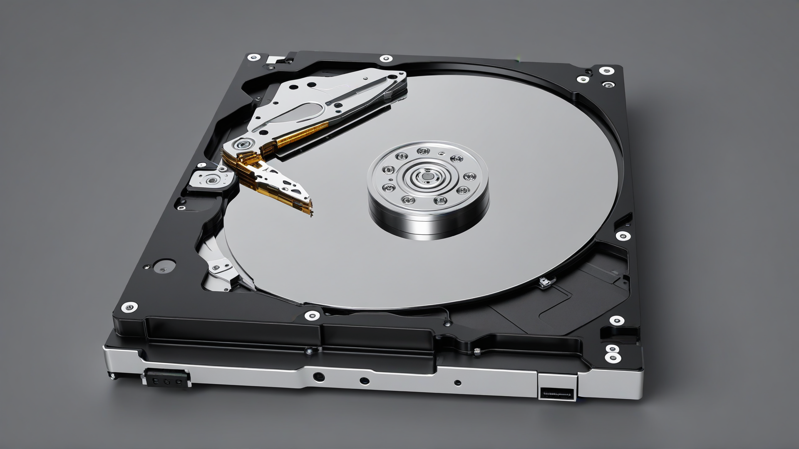

Le Disque Dur

Rôle
Le disque dur (DD) est ln composant visant à stocker des données sur l'ordinateur.
Caractéristiques
Le disque dur est un disque sur lequel les données sont gravées.
On mesure ses performances grâce à 3 critères :
- Le temps de latence (la vitesse de rotation des plateaux)
- Le temps de positionnement (seek time) (temps que met la tête pour atteindre un cylindre)
- Le temps de transfert (temps que mettent les données à être transférée entre le disque dur et l'ordinateur)
Ces 3 temps correspondent au temps de transfert total.
Connectique
Le HDD se connecte à la carte mère via les ports SATA.
Les SSD
Aujoud'hui, le HDD est petit à petit délaissé au profit du SSD (Solid-State Drive), bien plus rapide et résistant
Il existe plusieurs formes et interfaces pour les SSD
- Les SSD en format 2.5". Ils sont en SATA.
-
Les SSD en format M2. Ils peuvent être :
- En format NVMe (avec une interface PCIe)
- Avec une interface SATA